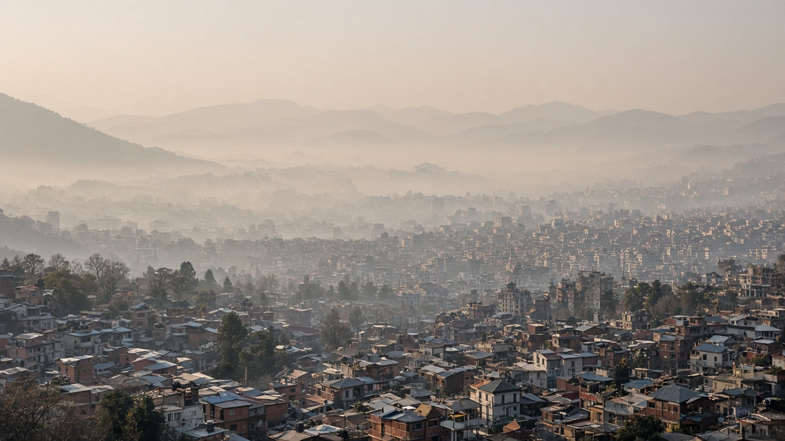
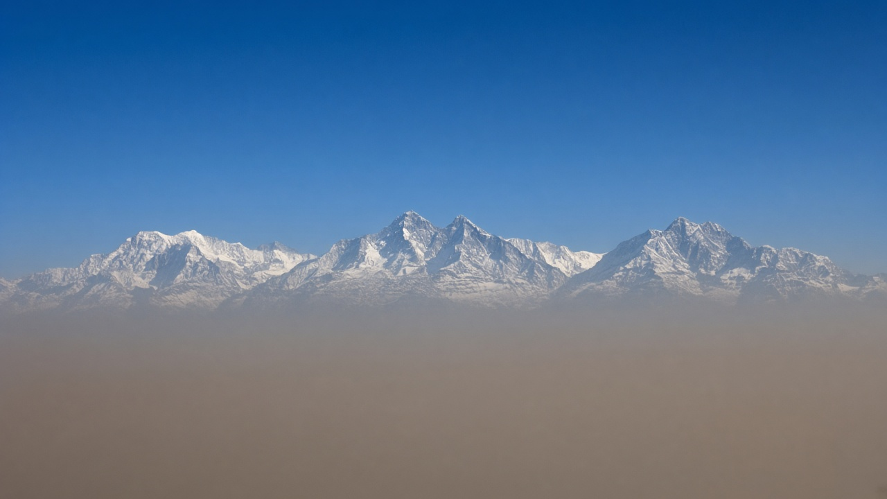
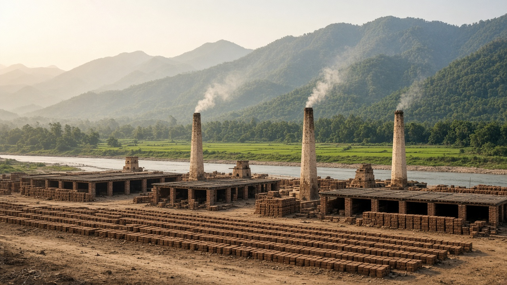

Air Quality in Nepal and the Himalayas
Published on August 20, 2026

Air quality in Nepal and the broader Himalayan region reflects a complex mix of rapid urbanization, topography, seasonal meteorology, and transboundary pollution transport. The Kathmandu Valley frequently experiences severe winter haze when temperature inversions trap vehicle emissions, brick kiln smoke, and dust from unpaved roads beneath a stagnant air mass. Pre-monsoon agricultural burning in the Indo-Gangetic Plain sends thick plumes of PM2.5 across the mountains, elevating concentrations in Nepal, Bhutan, and northern India for days at a time. High-altitude stations record pollution events that degrade visibility of Himalayan peaks and deposit black carbon on glaciers.
Rural communities face indoor air pollution from traditional biomass cookstoves, while expanding hydropower and road construction generate localized dust impacts. Border trade corridors and growing motorcycle fleets in cities add nitrogen oxides and carbon monoxide to ambient air. Nepal's Department of Environment operates monitoring networks in major cities, publishing AQI data and national air quality standards aligned with regional efforts. Community organizations advocate for cleaner brick kiln technologies, electric public transport pilots, and restrictions on open waste burning that contribute to neighborhood-level exposure.
Protecting Himalayan air quality requires cooperation among South Asian nations on agricultural fire management, vehicle emission standards, and industrial regulation. Satellite products and low-cost sensors extend monitoring into data-sparse mountain valleys where ground stations are limited. Climate change may alter monsoon timing and glacial melt patterns, indirectly affecting dust mobilization and atmospheric stability. Tourism stakeholders report reduced Himalayan visibility during peak haze weeks, highlighting how air pollution affects both local health and the mountain economy. Sustainable development that prioritizes clean energy access, efficient stoves, and green urban planning can reduce pollution while supporting livelihoods in one of the world's most environmentally sensitive and culturally significant mountain regions.

नेपाल र व्यापक हिमाली क्षेत्रको वायु गुणस्तर द्रुत सहरीकरण, भू-आकृति, ऋतुगत मौसम विज्ञान र सीमा पार प्रदूषण यातायातको जटिल मिश्रण हो। काठमाडौं उपत्यकामा जाडोमा तापक्रम उल्टोले सवारी उत्सर्जन, इट्टा भट्टाको धुवाँ र कच्चा सडकको धुलो स्थिर वायु पुञ्जमा थुनिएर गम्भीर धुंध सिर्जना गर्छ। प्राक्-मनसुनमा गङ्गा-सिन्धु मैदानमा कृषि दहनले PM2.5 को मोटो लहर हिमाल पार पठाउँछ, जसले नेपाल, भुटान र उत्तरी भारतमा दिनौंसम्म सान्द्रता बढाउँछ। उच्च स्थानका अनुगमन केन्द्रले प्रदूषण घटनाहरू दर्ता गर्छन् जसले हिमाली शिखरको दृश्यता घटाउँछ र हिमनदमा कालो कार्बन जम्मा गर्छ।
ग्रामीण समुदायमा परम्परागत जैविक इन्धन चुलोबाट घरेलु वायु प्रदूषण हुन्छ, भने विस्तारित जलविद्युत र सडक निर्माणले स्थानीय धुलो प्रभाव सिर्जना गर्छ। सीमा व्यापार क्षेत्र र शहरमा बढ्दो मोटरसाइकल बाटोले वातावरणीय वायुमा नाइट्रोजन अक्साइड र कार्बन मोनोअक्साइड थप्छ। नेपालको पर्यावरण विभागले प्रमुख शहरमा अनुगमन सञ्जाल सञ्चालन गर्छ, AQI डाटा र क्षेत्रीय प्रयाससँग मेल खाने राष्ट्रिय वायु गुणस्तर मापदण्ड प्रकाशित गर्छ। समुदाय संगठनहरूले सफा इट्टा भट्टा प्रविधि, विद्युतीय सार्वजनिक यातायात परीक्षण र खुला फोहोर दहन प्रतिबन्धका लागि वकालत गर्छन्, जसले छिमेकी-स्तरको संपर्क घटाउँछ।
हिमाली वायु गुणस्तर संरक्षणका लागि दक्षिण एसियाली राष्ट्रहरूबीच कृषि आगो व्यवस्थापन, सवारी उत्सर्जन मापदण्ड र औद्योगिक नियमनमा सहकार्य आवश्यक छ। उपग्रह उत्पादन र सस्तो सेन्सरले भुइँ स्टेशन सीमित भएका डाटा-विरल पर्वतीय उपत्यकामा अनुगमन विस्तार गर्छ। वायुमण्डलीय ताप वृद्धिले मनसुनको समय र हिमनदी पग्लने ढाँचा परिवर्तन गर्न सक्छ, जसले अप्रत्यक्ष रूपमा धुलो उठ्ने र वायुमण्डलीय स्थिरतामा असर पार्छ। पर्यटन सम्बद्ध पक्षहरूले चरम धुंध सप्ताहहरूमा हिमाली दृश्यता घटेको रिपोर्ट गर्छन्, जसले वायु प्रदूषणले स्थानीय स्वास्थ्य र पर्वतीय अर्थतन्त्र दुवैलाई कसरी असर गर्छ भन्ने कुरा उजागर गर्छ। स्वच्छ ऊर्जा पहुँच, किफायती चुलो र हरित शहरी योजनालाई प्राथमिकता दिने दिगो विकासले संसारका सबैभन्दा पर्यावरणीय रूपमा संवेदनशील र सांस्कृतिक रूपमा महत्त्वपूर्ण पर्वतीय क्षेत्रमा प्रदूषन घटाउँदै आजीविका समर्थन गर्न सक्छ।

नेपाल और व्यापक हिमाली क्षेत्र की वायु गुणवत्ता तीव्र शहरीकरण, भू-आकृति, ऋतुगत मौसम विज्ञान और सीमा पार प्रदूषण परिवहन का जटिल मिश्रण है। काठमांडू घाटी में सर्दियों में तापमान उलट वाहन उत्सर्जन, ईंट भट्ठे का धुआँ और कच्ची सड़कों की धूल स्थिर वायु पुञ्ज में फँसकर गंभीर धुंध पैदा करता है। मानसून-पूर्व गंगा-सिंधु मैदान में कृषि दहन PM2.5 की मोटी लहरें पहाड़ों के पार भेजता है, जिससे नेपाल, भूटान और उत्तरी भारत में दिनों तक सांद्रता बढ़ती है। ऊँचे स्थानों के स्टेशन ऐसी प्रदूषण घटनाएँ दर्ज करते हैं जो हिमालयी चोटियों की दृश्यता घटाती हैं और ग्लेशियरों पर काले कार्बन जमा करती हैं।
ग्रामीण समुदायों में पारंपरिक जैविक ईंधन चूल्हों से घरेलू वायु प्रदूषण होता है, जबकि विस्तारित जलविद्युत और सड़क निर्माण स्थानीय धूल प्रभाव पैदा करते हैं। सीमा व्यापार कॉरिडोर और शहरों में बढ़ता मोटरसाइकिल बेड़ा वातावरणीय हवा में नाइट्रोजन ऑक्साइड और कार्बन मोनोऑक्साइड जोड़ता है। नेपाल का पर्यावरण विभाग प्रमुख शहरों में निगरानी नेटवर्क संचालित करता है, AQI डेटा और क्षेत्रीय प्रयासों के अनुरूप राष्ट्रीय वायु गुणवत्ता मानक प्रकाशित करता है। सामुदायिक संगठन स्वच्छ ईंट भट्ठा प्रौद्योगिकी, विद्युत सार्वजनिक परिवहन परीक्षण और खुले कचरे के दहन पर प्रतिबंध की वकालत करते हैं, जो पड़ोस-स्तरीय संपर्क को कम करते हैं।
हिमालयी वायु गुणवत्ता की रक्षा के लिए दक्षिण एशियाई राष्ट्रों के बीच कृषि आग प्रबंधन, वाहन उत्सर्जन मानकों और औद्योगिक विनियमन पर सहयोग आवश्यक है। उपग्रह उत्पाद और सस्ते सेंसर भूमि स्टेशन सीमित डेटा-विरल पर्वतीय घाटियों में निगरानी का विस्तार करते हैं। वायुमंडलीय ताप वृद्धि मानसून के समय और ग्लेशियर पिघलने के पैटर्न बदल सकती है, जो अप्रत्यक्ष रूप से धूल उत्थान और वायुमंडलीय स्थिरता को प्रभावित करता है। पर्यटन हितधारक चरम धुंध सप्ताहों के दौरान हिमालयी दृश्यता कम होने की रिपोर्ट करते हैं, जो दर्शाता है कि वायु प्रदूषण स्थानीय स्वास्थ्य और पर्वतीय अर्थव्यवस्था दोनों को कैसे प्रभावित करता है। स्वच्छ ऊर्जा पहुँच, कुशल चूल्हे और हरित शहरी योजना को प्राथमिकता देने वाला सतत विकास दुनिया के सबसे पर्यावरणीय रूप से संवेदनशील और सांस्कृतिक रूप से महत्वपूर्ण पर्वतीय क्षेत्र में प्रदूषण घटाते हुए आजीविका का समर्थन कर सकता है।